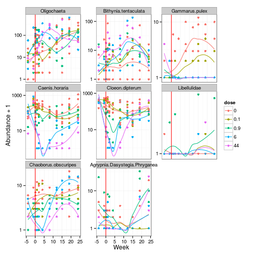

In the previous chapters we have dealt with one species at a time. However, in nature species occur together with other species and might might interact with each other. All the species and their interactions occurring at one time and space together form a community.
As ecotoxicologists we might also to test whole communities with their biotic interactions in order to make more realistic assessments.
We will analyse the pyrifos data set of (van den Brink and ter Braak, 1999) which is shipped with the vegan package. This is a classical multivariate dataset as commonly produced in mesocosm experiments.
Twelve experimental ditches were used in this experiment: Four ditches served as control and the remaining eight were treated in duplicates once with in the insecticide chlorpyrifos at doses of 0.1, 0.9, 6 and 44 ug / L. Invertebrates were sampled 11 times from week -4 pre-treatment through week 24 post-treatment. A total of 178 taxa were identified, this resulted in a table of 132 rows (11 * 12 samples) and 178 columns (taxa).
require(vegan)
data(pyrifos)
head(pyrifos[, c(1:11)])
## Simve Daplo Cerpu Alogu Aloco Alore Aloaf Copsp Ostsp Slyla Acrha
## w.4.c1 3.951 0 0 0 0 0 0 2.773 0.000 1.386 0.000
## w.4.c2 2.303 0 0 0 0 0 0 2.079 0.000 0.000 1.099
## w.4.c3 4.595 0 0 0 0 0 0 3.761 0.000 0.693 0.000
## w.4.c4 2.398 0 0 0 0 0 0 3.296 0.693 0.000 0.000
## w.4.c5 4.025 0 0 0 0 0 0 3.466 0.000 0.000 1.609
## w.4.c6 2.303 0 0 0 0 0 0 2.197 0.000 0.000 0.693
Rows correspond to samples and columns are the species (with abbreviated names) - a species x sites matrix as commonly used in community ecology.
The row-names code treatment and time, but we will create a separate data.frame with variables providing information on the experimental ditch, sampling time and treatment:
week <- gl(11, 12, labels = c(-4, -1, 0.1, 1, 2, 4, 8, 12, 15, 19, 24))
dose <- factor(rep(c(0.1, 0, 0, 0.9, 0, 44, 6, 0.1, 44, 0.9, 0, 6), 11))
ditch <- gl(12, 1, length=132)
env <- data.frame(week, dose, ditch)
head(env)
## week dose ditch
## 1 -4 0.1 1
## 2 -4 0 2
## 3 -4 0 3
## 4 -4 0.9 4
## 5 -4 0 5
## 6 -4 44 6
Let's have a first look at the abundance of some taxa during the experiment. The code here is more lengthy and you don't need to fully understand it. The code subsets and prepares the data and then shows a plot with time on x-axis, abundance on y-axis and dose as color for each species.
# subset species
take <- c('binitent', 'olchaeta', 'caenhora', 'cloedipt', 'chaoobsc', 'gammpule',
'libellae','agdasphr' )
abu <- pyrifos[ , names(pyrifos) %in% take]
names(abu) <- c('Oligochaeta', 'Bithynia tentaculata', 'Gammarus pulex',
'Caenis horaria', 'Cloeon dipterum', 'Libellulidae',
'Chaoborus obscuripes', 'Agrypnia/Dasystegia/Phryganea')
# data has been ln-transformed - back-transformation to raw abundances
abu_t <- round((exp(abu) - 1)/10)
# join with enviromental variables and bring to long format,
require(reshape2)
dfm <- melt(data.frame(dose, week, abu_t), id.vars = c('dose', 'week'))
# week should be numeric for plot
dfm$week <- as.numeric(as.character(dfm$week))
# x-axis: week, y-axis: abundances (log-scale), color: doses, splitted by taxon)
require(ggplot2)
ggplot(dfm, aes(x = week, y = value + 1, col = dose)) +
geom_point() +
geom_smooth(aes(group = dose), se = FALSE) +
facet_wrap(~variable, scales = 'free_y') +
geom_vline(aes_string(xintercept = 0), col = "red") +
scale_y_log10() +
theme_bw() +
ylab('Abundance + 1') +
xlab('Week')

From this plot we see that after application (red vertical line) the abundance of Caenis horaria, Cloeon dipterum and Chaoborus obscuripes decreases for the highest doses, but recovers to the end of experiment. Whereas, Gamarus pulex does not recover. Bithynia tentaculata and Oligochaeta seem the profit from treatment. Moreover, there are species in very low abundances where we cannot make any inferences (like Libellulidae).